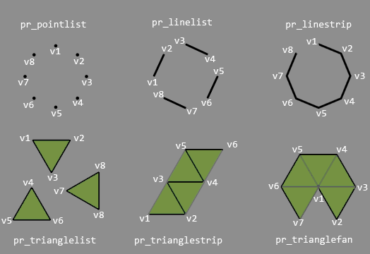
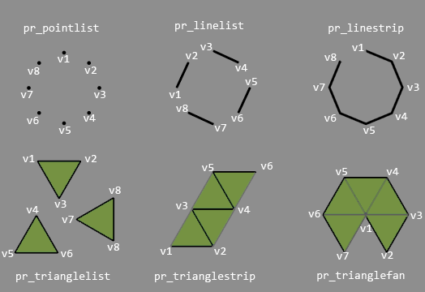
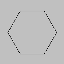

Inicia una primitiva con la clase dada.
Sintaxis
draw_primitive_begin(kind);
Argumentos
| Argumento | Descripción |
|---|---|
| kind | La clase de primitiva a dibujar. |
Descripción
Esta función debe ser llamada antes de poder definir cualquier figura primitiva. Existen 6 tipos de primitivas que se pueden seleccionar con las siguientes constantes:
La siguiente imagen muestra la disposición de los vértices del dibujo de primitivas, dependiendo del tipo de primitiva escogido:

- pr_pointlist
- pr_linelist
- pr_linestrip
- pr_trianglelist
- pr_trianglestrip
- pr_trianglefan (Esta constante no se encuentra disponible en la plataforma HTML5, y puede no trabajar correctamente en algunos dispositivos de otras plataformas)
La siguiente imagen muestra la disposición de los vértices del dibujo de primitivas, dependiendo del tipo de primitiva escogido:

Devuelve
Nada.
Ejemplo
lados = 6;
dir = 360 / lados;
draw_primitive_begin(pr_linestrip);
for(i = 0; i <= lados; i++) {
lx = lengthdir_x(48, dir*i);
ly = lengthdir_y(48, dir*i);
draw_vertex(64+lx, 64+ly);
}
draw_primitive_end();El anterior código permite dibujar el borde de un polígono regular de seis lados, como se muestra en la figura a continuación:
